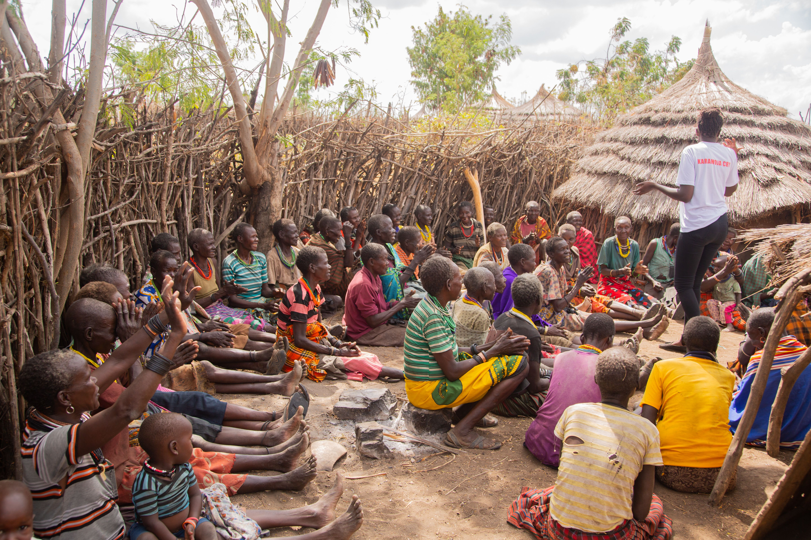
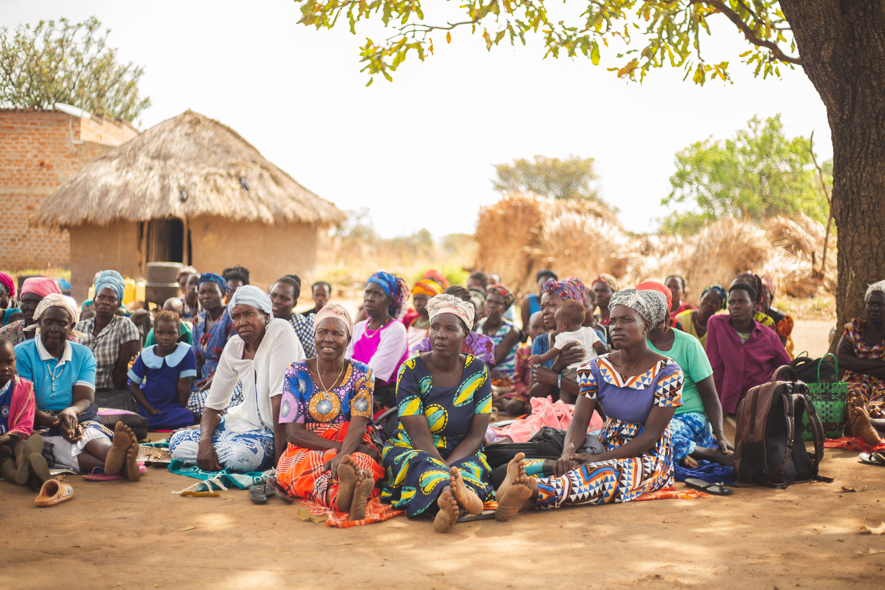
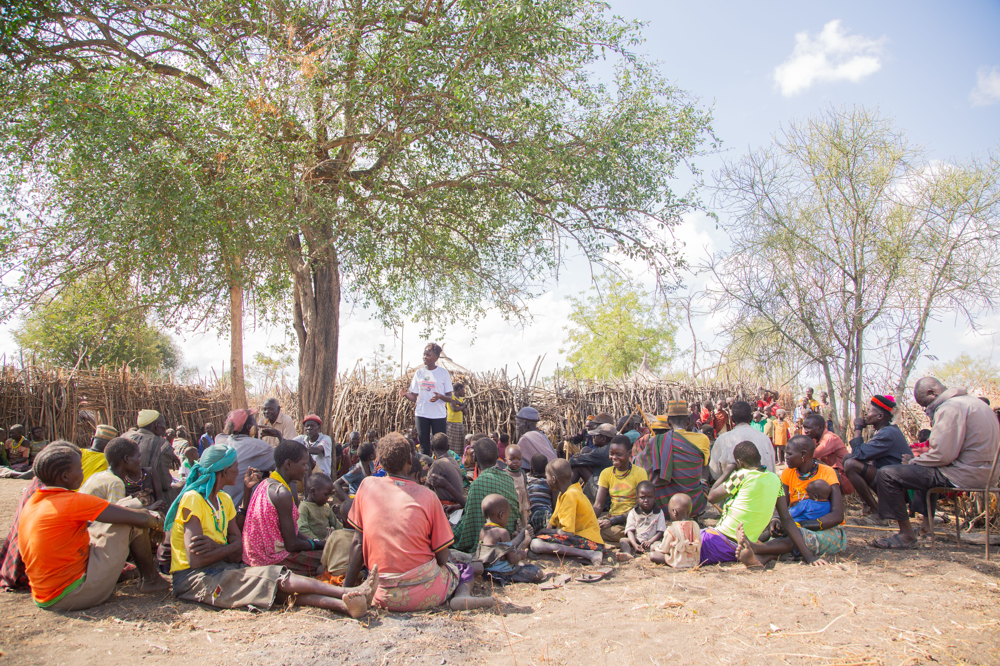

Walimu na Wanafunzi
Rahisisha ufundishaji na ujifunzaji.
Wasiliana kwa lugha yako ya asili. LocalLang inakusaidia kutafsiri lugha za Tanzania kwenda Kiswahili na Kiingereza kwa urahisi.
“Bwana, unasaidiaje?”
◖))“Bwana, unasaidiaje?”
“Sir, how can I help you?”
Gundua lugha na jamii mbalimbali zinazounda utambulisho wetu.
LocalLang inalenga kusaidia watu kuelewana katika elimu, afya, huduma za jamii na biashara — bila kuacha lugha zao za asili nyuma.
Rahisisha ufundishaji na ujifunzaji.

Saidia mawasiliano katika huduma za afya.

Elewana kwa lugha inayokufanya ujisikie nyumbani.

Wafikie wateja kwa mawasiliano bora.

Fikisha maarifa ya kilimo na huduma kwa wakulima.

Wasaidie wageni kufurahia safari na huduma zao.

Toa maelekezo na taarifa kwa wasafiri kwa uwazi.

Rahisisha upatikanaji wa taarifa na msaada.
Njia rahisi ya kuwasiliana katika lugha mbalimbali.

Chagua lugha ya asili unayotaka kutumia na lugha lengwa.
Ingiza ujumbe wako au tumia sauti pale kipengele hicho kinapowezeshwa.
Mfumo huchambua ujumbe na kutayarisha tafsiri kulingana na data iliyopo.
Soma matokeo na hakikisha maana inafaa kwa muktadha.
Tumia tafsiri kuwasiliana na mtu mwingine kwa uelewa zaidi.